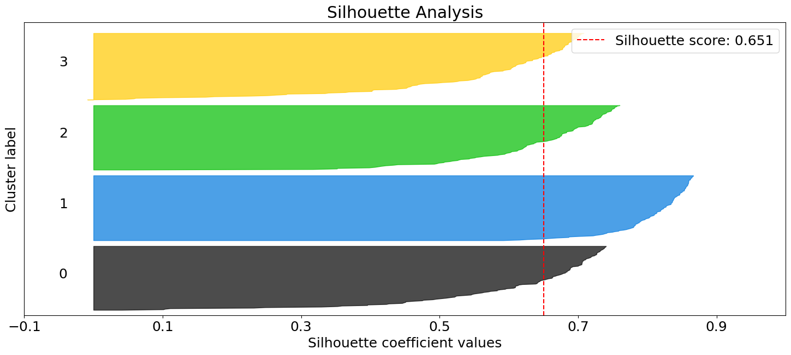
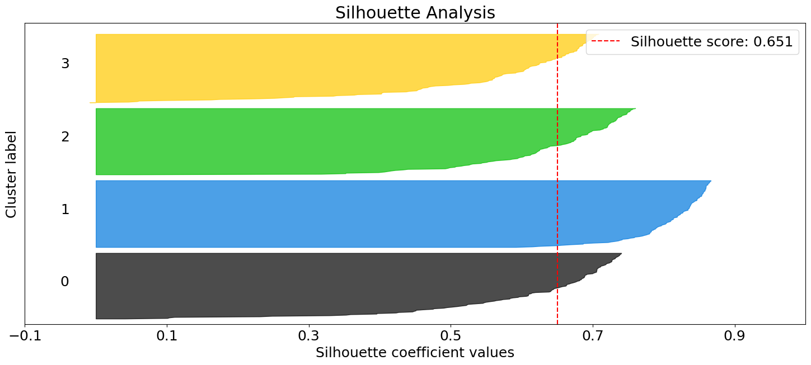
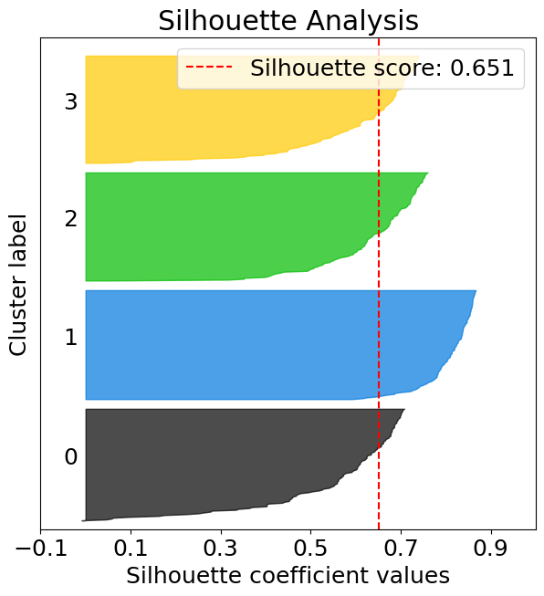

Clustering evaluation
Contents
Clustering evaluation#
Learn how to easily evaluate clustering algorithms and determine the optimal number of clusters using the below methods:
Elbow curve plots the sum of squared errors (squared errors summed across all points) for each value of k.
Silhouette analysis determines if individual points are correctly assigned to their clusters.
import matplotlib
from sklearn import datasets
from sklearn.cluster import KMeans
from sklearn_evaluation import plot
matplotlib.rcParams["figure.figsize"] = (7, 7)
matplotlib.rcParams["font.size"] = 18
# get data for clustering
X, y = datasets.make_blobs(
n_samples=500,
n_features=2,
centers=4,
cluster_std=1,
center_box=(-10.0, 10.0),
shuffle=True,
random_state=1,
)
# Fit kMeans on the data
kmeans = KMeans(random_state=10)
Elbow curve#
Elbow curve helps to identify the point at which the plot starts to become parallel to the x-axis. The K value corresponding to this point is the optimal number of clusters. In the below plot one is likely to select k=4.
plot.elbow_curve(X, kmeans, n_clusters=range(1, 30))
<AxesSubplot: title={'center': 'Elbow Plot'}, xlabel='Number of clusters', ylabel='Sum of Squared Errors'>

Elbow curve from results#
import numpy as np
n_clusters = range(1, 10, 2)
sum_of_squares = np.array([4572.2, 470.7, 389.9, 335.1, 305.5])
plot.elbow_curve_from_results(n_clusters, sum_of_squares, times=None)
<AxesSubplot: title={'center': 'Elbow Plot'}, xlabel='Number of clusters', ylabel='Sum of Squared Errors'>

Silhouette plot#
The below plot shows that n_clusters value of 3, 5 and 6 are a bad pick for the given data. One is likely to select between 2 and 4 n_clusters.
silhouette = plot.silhouette_analysis(X, kmeans)

 



Silhouette plot from cluster labels#
X, y = datasets.make_blobs(
n_samples=500,
n_features=2,
centers=4,
cluster_std=1,
center_box=(-10.0, 10.0),
shuffle=True,
random_state=1,
)
kmeans = KMeans(n_clusters=4, random_state=1)
cluster_labels = kmeans.fit_predict(X)
silhouette = plot.silhouette_analysis_from_results(X, cluster_labels)
